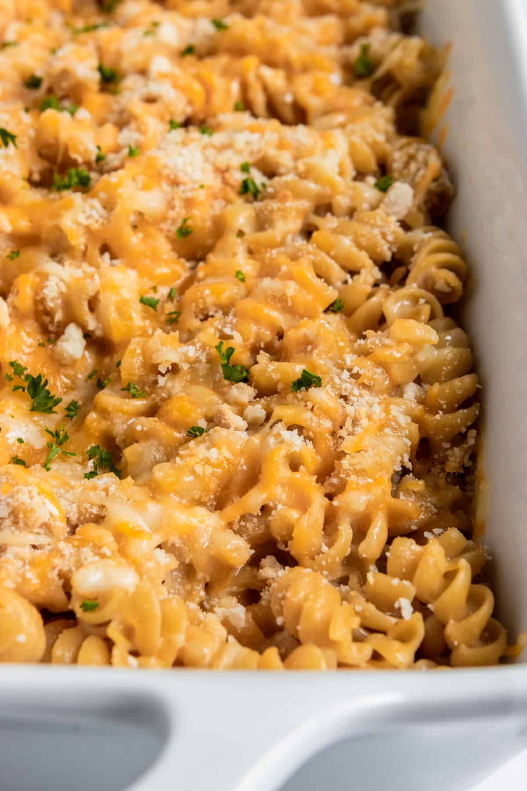

Protein Mac and Cheese

- Chickpea Pasta
- Greek yogurt
- Cheese
- Milk
- Boil the pasta according to package until al dente. Pay extra close attention when using chickpea pastas as they can very easily be overcooked.
- Drain the pasta once cooked and set aside.
- In pasta pot, or another sauce pan, whisk together the Greek yogurt, butter and milk over medium heat until smooth. Add in one cup of shredded cheese and stir, allowing to melt. Add another half cup and melt. Stir in seasonings, salt and pepper.
- Add the pasta to the cheese sauce and toss to coat. You can serve it just like this or continue to prep for baking.
- If baking, spray a 8x8 inch or 9x9 inch baking pan with oil. Pour the mac and cheese into the dish and spread to one even layer.
- Sprinkle with remaining shredded cheese and breadcrumbs id desired.
- Bake for 15-20 minutes or until cheese on top is melted and browning. Serve after cooling for about 10 minutes.